旧 64 对中，至少一个原三次策略改变选择的全部 5 对。下表分差均为 A 减 B；绿为选对，橙为选错，灰为同分。方向指画面移动方向。
A large-format portrait of a handsome man behind a white backdrop, spot-lighting, depth of field, high contrast, black and white, grainy
人工赢家 B，原图分差 +0.0053710938，原图选择 A。BT 选对 4/16；TT 选对 4/6。
打开 A 原始 WebP 打开 B 原始 WebP| 视图 | A | B |
|---|---|---|
| 原图 | ||
| 左移 | ||
| 右移 | ||
| 上移 | ||
| 下移 |
| 系数 | 左 | 右 | 上 | 下 |
|---|---|---|---|---|
| 0.90 | +0.006917318 选错 · A |
+0.003824870 选错 · A |
+0.001708984 选错 · A |
-0.001953125 选对 · B |
| 0.95 | +0.006835938 选错 · A |
+0.003743490 选错 · A |
+0.001627604 选错 · A |
-0.002034505 选对 · B |
| 1.05 | +0.006103516 选错 · A |
+0.003011068 选错 · A |
+0.000895182 选错 · A |
-0.002766927 选对 · B |
| 1.10 | +0.006022135 选错 · A |
+0.002929688 选错 · A |
+0.000813802 选错 · A |
-0.002848307 选对 · B |
| 左 | 右 | 上 | 下 |
|---|---|---|---|
| +0.006958008 选错 · A |
+0.002319336 选错 · A |
-0.000854492 选对 · B |
-0.006347656 选对 · B |
a dinosaur with the head of a cat, lightly furry, in a forest
人工赢家 A，原图分差 +0.0008544922，原图选择 A。BT 选对 0/16；TT 选对 0/6。
打开 A 原始 WebP 打开 B 原始 WebP| 视图 | A | B |
|---|---|---|
| 原图 | ||
| 左移 | 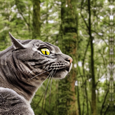 |
|
| 右移 | ||
| 上移 | ||
| 下移 |
| 系数 | 左 | 右 | 上 | 下 |
|---|---|---|---|---|
| 0.90 | -0.001302083 选错 · B |
-0.001831055 选错 · B |
-0.001953125 选错 · B |
-0.002278646 选错 · B |
| 0.95 | -0.001261393 选错 · B |
-0.001790365 选错 · B |
-0.001912435 选错 · B |
-0.002237956 选错 · B |
| 1.05 | -0.001586914 选错 · B |
-0.002115885 选错 · B |
-0.002237956 选错 · B |
-0.002563477 选错 · B |
| 1.10 | -0.001180013 选错 · B |
-0.001708984 选错 · B |
-0.001831055 选错 · B |
-0.002156576 选错 · B |
| 左 | 右 | 上 | 下 |
|---|---|---|---|
| -0.002563477 选错 · B |
-0.003356934 选错 · B |
-0.003540039 选错 · B |
-0.004028320 选错 · B |
a cat and chicken hybrid
人工赢家 B，原图分差 +0.0021972656，原图选择 A。BT 选对 0/16；TT 选对 0/6。
打开 A 原始 WebP 打开 B 原始 WebP| 视图 | A | B |
|---|---|---|
| 原图 | ||
| 左移 | 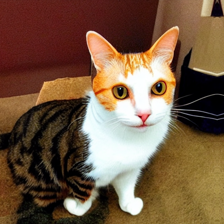 |
|
| 右移 | 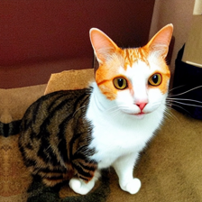 |
|
| 上移 | 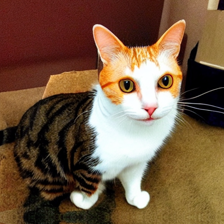 |
|
| 下移 | 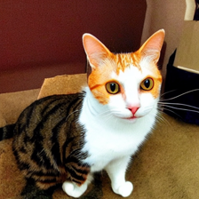 |
| 系数 | 左 | 右 | 上 | 下 |
|---|---|---|---|---|
| 0.90 | +0.001586914 选错 · A |
+0.000569661 选错 · A |
+0.001302083 选错 · A |
+0.001871745 选错 · A |
| 0.95 | +0.002278646 选错 · A |
+0.001261393 选错 · A |
+0.001993815 选错 · A |
+0.002563477 选错 · A |
| 1.05 | +0.002319336 选错 · A |
+0.001302083 选错 · A |
+0.002034505 选错 · A |
+0.002604167 选错 · A |
| 1.10 | +0.001668294 选错 · A |
+0.000651042 选错 · A |
+0.001383464 选错 · A |
+0.001953125 选错 · A |
| 左 | 右 | 上 | 下 |
|---|---|---|---|
| +0.002929688 选错 · A |
+0.001403809 选错 · A |
+0.002502441 选错 · A |
+0.003356934 选错 · A |
ancient magical ruins, surrounded by mystical green grassy meadows, by sylvain sarrailh, rossdraws, ambient light, ultra detailed, fantasy artwork, 8 k, volumetric lighting, trending on artstation, award winning, very beautiful.
人工赢家 A，原图分差 +0.0004882812，原图选择 A。BT 选对 8/16；TT 选对 2/6。
打开 A 原始 WebP 打开 B 原始 WebP| 视图 | A | B |
|---|---|---|
| 原图 | ||
| 左移 | ||
| 右移 | ||
| 上移 | ||
| 下移 |
| 系数 | 左 | 右 | 上 | 下 |
|---|---|---|---|---|
| 0.90 | +0.001017253 选对 · A |
+0.001017253 选对 · A |
+0.002075195 选对 · A |
-0.000284831 选错 · B |
| 0.95 | +0.000651042 选对 · A |
+0.000651042 选对 · A |
+0.001708984 选对 · A |
-0.000651042 选错 · B |
| 1.05 | -0.000162760 选错 · B |
-0.000162760 选错 · B |
+0.000895182 选对 · A |
-0.001464844 选错 · B |
| 1.10 | -0.000162760 选错 · B |
-0.000162760 选错 · B |
+0.000895182 选对 · A |
-0.001464844 选错 · B |
| 左 | 右 | 上 | 下 |
|---|---|---|---|
| +0.000000000 同分 · tie |
+0.000000000 同分 · tie |
+0.001586914 选对 · A |
-0.001953125 选错 · B |
game asset of pokemon toys and plushies, in gouache detailed paintings, props, stylized, 2 d sprites, kitbash, arcane, overwatch, blue and pink color scheme, 8 k, close up
人工赢家 B，原图分差 -0.0012207031，原图选择 B。BT 选对 8/16；TT 选对 4/6。
打开 A 原始 WebP 打开 B 原始 WebP| 视图 | A | B |
|---|---|---|
| 原图 | 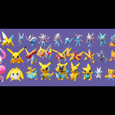 |
|
| 左移 | 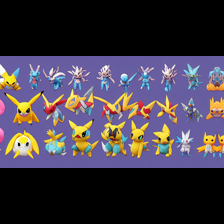 |
|
| 右移 | 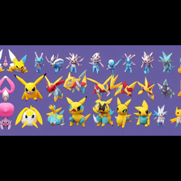 |
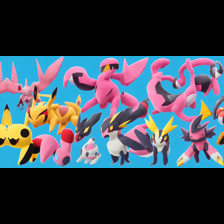 |
| 上移 | 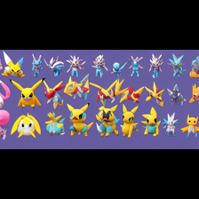 |
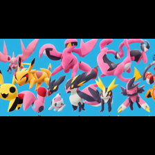 |
| 下移 | 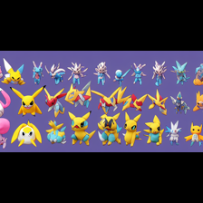 |
| 系数 | 左 | 右 | 上 | 下 |
|---|---|---|---|---|
| 0.90 | +0.000569661 选错 · A |
+0.001871745 选错 · A |
-0.004516602 选对 · B |
-0.005289714 选对 · B |
| 0.95 | +0.001139323 选错 · A |
+0.002441406 选错 · A |
-0.003946940 选对 · B |
-0.004720052 选对 · B |
| 1.05 | +0.001627604 选错 · A |
+0.002929688 选错 · A |
-0.003458659 选对 · B |
-0.004231771 选对 · B |
| 1.10 | +0.001790365 选错 · A |
+0.003092448 选错 · A |
-0.003295898 选对 · B |
-0.004069010 选对 · B |
| 左 | 右 | 上 | 下 |
|---|---|---|---|
| +0.002807617 选错 · A |
+0.004760742 选错 · A |
-0.004821777 选对 · B |
-0.005981445 选对 · B |